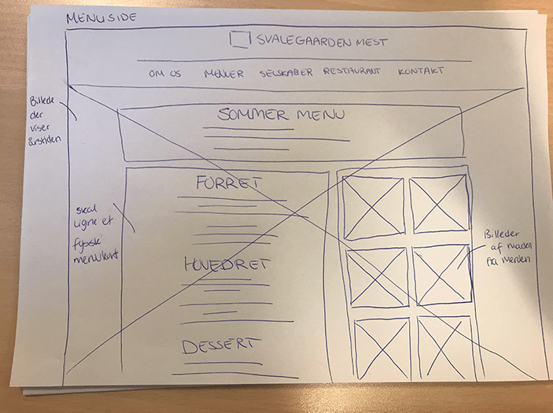
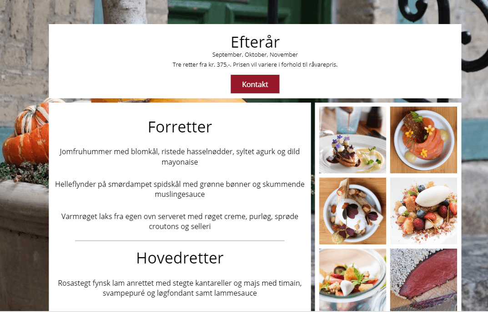
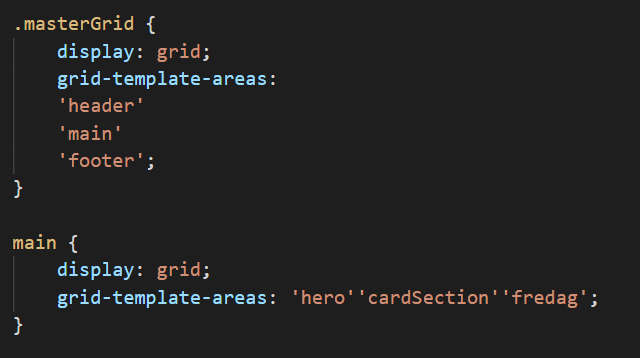

Svalegaarden Mest
Se løsningen herOpgaven
Jeg fik til opgave at producere et nyt website til Svalegaarden Mest i forbindelse med 1. semester eksamen.
Deres daværende website udtrykte ikke tydeligt nok forskellen mellem de fire årstidsmenuer og den høje kvalitet som de ville tilbyde og de ønskede tilmed
et moderne website, der fremstillede deres ydelser eksklusivt og visuelt æstetisk.
Løsningen er realiseret i samarbejde med min eksamensgruppe.

Analyse og design
Vi havde et strategisk brief, hvor vi skulle forholde os til farver, fonts, logo mm.
Efter at have orienteret os satte vi os for at finde frem til målgruppen og starte interviews.
Efter at have analyseret resultater fra brugerundersøgelsen, samt en mindre virksomhedsanalyse af Svalegaarden Mest, og udarbejdelse af content inventory, startede
idégeneringen hvor vi sketchede, og herefter lavede mockups ved brug af adobe XD.

Realisering
Løsningen blev realiseret ved brug af HTML, CSS og Javascript og der blev her samarbejdet ved brug af Github.
Kodningen er opbygget i et grid system, hvor der til alle undersider er brugt et grid, kaldet 'masterGrid', da alle siderne indeholder header, main og footer.
Derefter er header og footer opbygget og indsat i hver sit HTML dokument, så det fungerer som templates, hvor det eneste, der mangler er 'main' indhold.
I "main" er der derefter brugt et individuelt grid, til at adskille de forskellige sider.
Se løsningen her
